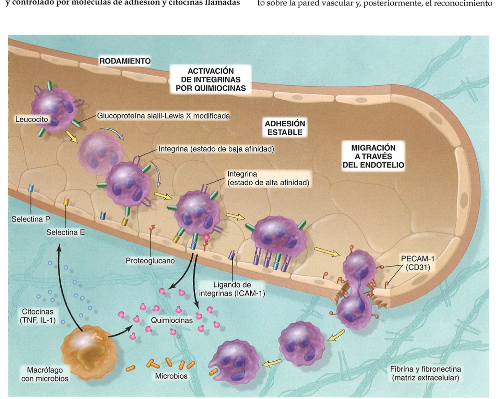
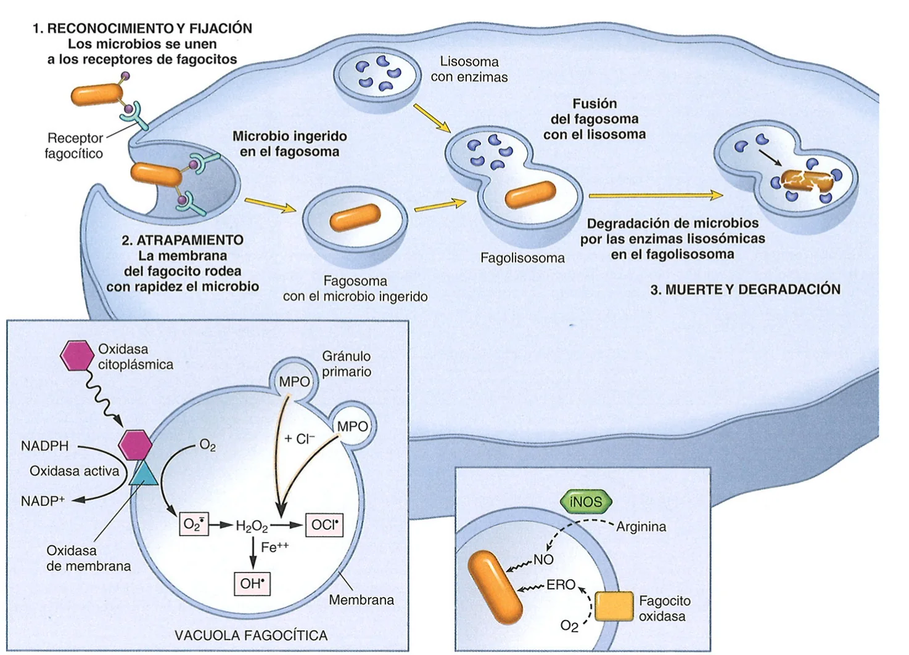
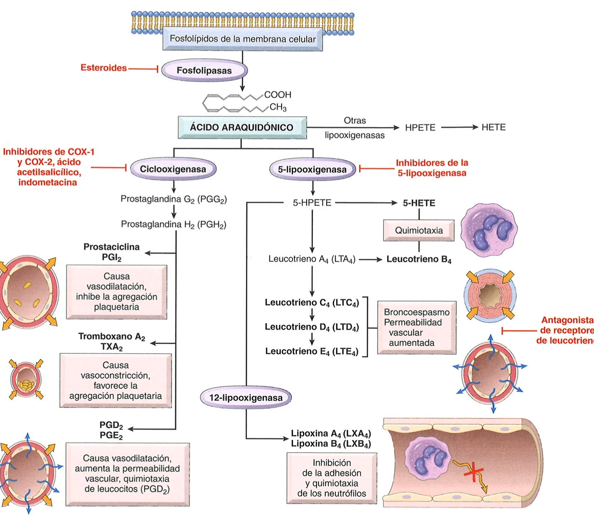
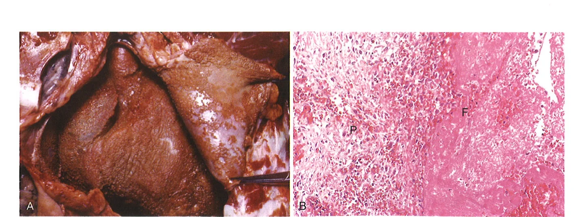
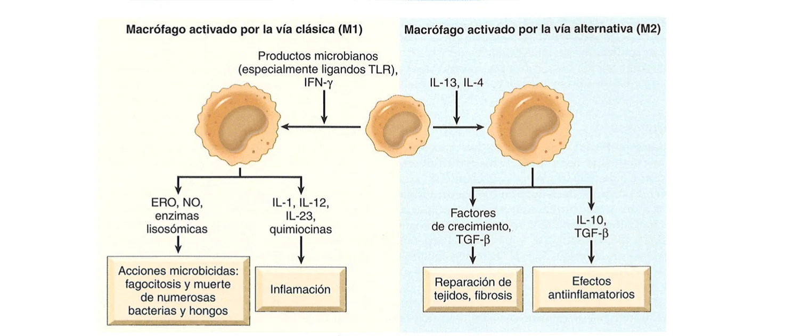

Qué cubre esta guía
Las citas p. N corresponden a la página impresa del libro. El texto se contrastó con el OCR del capítulo.
Lo esencial en 60 segundos
- La inflamación aguda es la respuesta vascular y leucocitaria rápida (neutrófilos) en tres pasos: vasodilatación, aumento de permeabilidad y migración de leucocitos al sitio de lesión.
- Reclutamiento: selectinas median el rodamiento, integrinas la adhesión firme y CD31/PECAM-1 la diapédesis; los neutrófilos llegan a las 6-24 h y los monocitos a las 24-48 h.
- La destrucción microbiana usa estallido respiratorio (NADPH oxidasa, sistema H2O2-MPO-haluro), NO y enzimas lisosómicas; su defecto causa enfermedad granulomatosa crónica.
- La inflamación crónica combina infiltrado mononuclear (macrófagos M1 y M2, linfocitos Th1, Th2, Th17), lesión tisular y reparación; el granuloma contiene agentes persistentes.
- Los mediadores clave son histamina, eicosanoides (PG, leucotrienos), citocinas (TNF, IL-1, IL-6), quimiocinas y complemento; la terminación activa usa lipoxinas, TGF-β e IL-10.
- La reparación depende del tipo celular (lábiles, estables, permanentes): regeneración o cicatriz con tejido de granulación, TGF-β fibrogénico, angiogenia y remodelado MMP/TIMP.
Ideas clave
- La inflamación es una respuesta protectora de los tejidos vascularizados que lleva leucocitos y moléculas de defensa desde la circulación a los sitios de infección y lesión para eliminar al agresor. El sufijo -itis denota inflamación de un órgano; el quinto signo cardinal es la pérdida de función (functio laesa) p. 71, 73.
- La reacción típica sigue cinco pasos: reconocimiento del agente, reclutamiento de leucocitos y proteínas plasmáticas, eliminación por fagocitos, regulación (terminación) y reparación p. 72.
- La inflamación aguda tiene tres componentes: dilatación de vasos con mayor flujo, aumento de la permeabilidad de la microvasculatura, y migración y activación de leucocitos (sobre todo neutrófilos) p. 75.
- La inflamación crónica (semanas o meses) coexpresa inflamación, lesión tisular y reparación; el infiltrado es mononuclear (macrófagos, linfocitos, células plasmáticas) p. 96, 97.
- Los mecanismos antimicrobianos (ERO, NO, enzimas lisosómicas) no distinguen entre agresor y huésped: mal dirigidos o descontrolados lesionan tejidos propios p. 84.
- La sepsis es la forma sistémica grave (shock séptico), por concentraciones altas de TNF e IL-1 (síndrome de respuesta inflamatoria sistémica) p. 102.
- La reparación combina regeneración y cicatrización (depósito de tejido conjuntivo); depende de la capacidad proliferativa del tejido (lábiles, estables, permanentes) y de la integridad de la matriz extracelular (MEC) p. 103, 105.
- La cicatrización requiere angiogenia, fibroblastos, colágeno (TGF-β como factor fibrogénico) y remodelado por MMP y TIMP p. 107, 108.
Perspectiva general de la inflamación
Sin inflamación las infecciones quedarían sin control y las heridas no cicatrizarían. Daña cuando se dirige mal (autoinmunidad), se dispara ante lo inocuo (alergias) o se descontrola; subyace a artritis reumatoide, ateroesclerosis, fibrosis pulmonar, y participa en diabetes tipo 2, Alzheimer y cáncer. Historia: Celso (rubor, tumor, calor, dolor); Virchow (functio laesa); Hunter (respuesta beneficiosa); Metchnikoff (fagocitosis); Lewis (mediadores químicos como histamina) p. 71, 72, 73.
Causas: p. 73
- Infecciones y toxinas microbianas: las más frecuentes e importantes p. 73.
- Necrosis tisular por cualquier causa (isquemia, traumatismo, quemaduras, radiación) p. 74.
- Cuerpos extraños (astillas, suciedad, suturas) p. 74.
- Sustancias endógenas depositadas: urato (gota), colesterol (ateroesclerosis), lípidos (síndrome metabólico de la obesidad) p. 74.
- Reacciones inmunitarias (hipersensibilidad): contra autoantígenos, antígenos ambientales o microbios; estímulos no eliminables, reacción persistente p. 74.
Reconocimiento (paso inicial): p. 74
- Receptores de tipo Toll (TLR): en membrana (microbios extracelulares), endosomas (ingeridos) y citosol; en epitelio, células dendríticas, macrófagos y otros leucocitos; inducen moléculas de adhesión endotelial, citocinas y otros mediadores p. 74.
- Sensores de lesión celular: receptores citosólicos tipo NOD (NLR), para moléculas liberadas o alteradas por daño (ácido úrico, ATP, descenso de K+ citosólico, ADN citosólico); activan el inflamasoma, que produce IL-1 (recluta leucocitos). Mutaciones de ganancia de función: síndromes autoinflamatorios (tratados con antagonistas de IL-1). El inflamasoma también interviene ante cristales de urato (gota), lípidos (síndrome metabólico, diabetes tipo 2), colesterol (ateroesclerosis) y amiloide cerebral (Alzheimer) p. 74.
- Receptores de opsoninas: Fc de anticuerpos y complemento; reconocen microbios opsonizados (opsonización) p. 74.
- Proteínas circulantes: complemento, lectina de unión a manosa (azúcares microbianos), colectinas p. 74.
Inflamación aguda
Respuesta rápida (minutos a horas), dura horas o pocos días; exudado de líquido y proteínas (edema) e infiltrado neutrofílico p. 73.
| Característica | Aguda | Crónica |
|---|---|---|
| Inicio | Rápido: minutos | Lento: días u horas |
| Infiltrado celular | Neutrófilos | Monocitos / macrófagos y linfocitos |
| Lesión tisular, fibrosis | Leve, autorresolutiva | Grave y progresiva |
| Signos locales y sistémicos | Pronunciados | Menores |
Fuente: p. 73.
Exudado: líquido extravascular rico en proteínas y restos celulares (implica aumento de permeabilidad). Trasudado: filtrado pobre en proteínas (albúmina) por desequilibrio hidrostático u osmótico, sin aumento de permeabilidad. Edema: exceso de líquido en intersticio o cavidades serosas. Pus: exudado purulento, neutrófilos con restos celulares y a veces microbios p. 75.
Cambios vasculares: la vasodilatación (por histamina sobre el músculo liso; primero arteriolas, luego lechos capilares) causa eritema y calor; hay aumento de permeabilidad; el flujo se ralentiza (estasis) con congestión; durante la estasis los neutrófilos se adhieren al endotelio, que se activa y expresa más moléculas de adhesión p. 75, 76.
Aumento de la permeabilidad (vénulas poscapilares), tres mecanismos: retracción de células endoteliales (el más frecuente; histamina, bradicinina, leucotrienos; respuesta transitoria inmediata, 15 a 30 min); extravasación prolongada tardía (lesiones leves como quemadura, radiación UV, algunas toxinas; inicia tras 2 a 12 h y dura horas o días; ejemplo: quemadura solar); y lesión endotelial directa (necrosis y desprendimiento por lesiones graves o microbios y toxinas; los neutrófilos adheridos la amplifican; dura hasta la trombosis o la reparación del vaso) p. 76.
El flujo linfático aumenta y drena el edema (pueden pasar leucocitos, residuos y microbios); puede haber linfangitis e linfoadenitis reactiva (hiperplasia folicular). Estrías rojas en la piel junto a una herida: linfangitis p. 76.
Reclutamiento de leucocitos
Etapas: (1) marginación, rodamiento y adhesión al endotelio; (2) migración transendotelial; (3) migración en tejidos hacia el estímulo quimiotáctico p. 77.


- Selectinas (rodamiento): selectina L (leucocitos), E (endotelio activado por citocinas) y P (plaquetas y endotelio, desde los cuerpos de Weibel-Palade por histamina y trombina). Ligandos: sialil-Lewis X sobre mucinas (GlyCAM-1, CD34, MAdCAM-1, PSGL-1) p. 78.
- Integrinas (adhesión firme): TNF e IL-1 inducen VCAM-1 (ligando de VLA-4, β1) e ICAM-1 (LFA-1, MAC-1, β2). Las quimiocinas fijadas a proteoglucanos endoteliales activan al leucocito en rodamiento y pasan sus integrinas a alta afinidad: ligandos inducidos + avidez = adhesión estable p. 78.
| Familia | Molécula | Distribución principal | Ligando / papel |
|---|---|---|---|
| Selectina | Selectina L (CD62L) | Neutrófilos, monocitos, linfocitos T y B vírgenes | GlyCAM-1, CD34, MAdCAM-1; rodamiento |
| Selectina | Selectina E (CD62E) | Endotelio activado por TNF, IL-1 | Sialil-Lewis X; rodamiento |
| Selectina | Selectina P (CD62P) | Endotelio activado (TNF, IL-1, histamina, trombina) | Sialil-Lewis X en PSGL-1; rodamiento |
| Integrina | LFA-1 (CD11a/CD18) | Neutrófilos, monocitos, linfocitos T | ICAM-1, ICAM-2; adhesión firme |
| Integrina | MAC-1 (CD11b/CD18) | Monocitos, macrófagos | ICAM-1, ICAM-2; adhesión y fagocitosis |
| Integrina | VLA-4 (CD49a/CD29) | Monocitos, linfocitos T | VCAM-1 (CD106) |
| Integrina | α4β7 (CD49d/CD29) | Linfocitos T y B intestinales | VCAM-1, MAdCAM-1 |
| Ig-superfamilia | CD31 (PECAM-1) | Endotelio, leucocitos | Transmigración |
Fuente: p. 77-78.
Diapédesis (transmigración) en vénulas poscapilares: paso por espacios interendoteliales (CD31/PECAM-1) y perforación de la membrana basal (colagenasas). Deficiencias de moléculas de adhesión: más infecciones bacterianas p. 79.
Quimiotaxia: movimiento por un gradiente químico. Quimiotácticos: péptidos bacterianos con N-formilmetionina terminal; quimiocinas (IL-8), C5a, LTB4. Actúan sobre receptores acoplados a proteína G de siete pasos; polimerizan actina en el frente y miosina atrás (filopodios) p. 79.
Cronología: neutrófilos 6 a 24 h, luego monocitos 24 a 48 h. Causas: los neutrófilos son más numerosos, responden antes a quimiocinas, se adhieren mejor a selectinas P y E, y sufren apoptosis; los monocitos sobreviven más, proliferan y dominan las reacciones prolongadas. Excepciones: Pseudomonas (neutrófilos días), virus (linfocitos primeros), hipersensibilidad (linfocitos, macrófagos, células plasmáticas), helmintiasis y alergias (eosinófilos) p. 79.
Fagocitosis y eliminación del agente causal
El reconocimiento de microbios o células muertas produce la activación leucocítica: aumento del Ca2+ citosólico y activación enzimática (proteína cinasa C, fosfolipasa A2), vía TLR, receptores de citocinas y receptores fagocíticos p. 80.
| Propiedad | Neutrófilos | Macrófagos |
|---|---|---|
| Origen | Células madre hematopoyéticas de médula ósea | Médula ósea (inflamatorios); residentes del saco vitelino o hígado fetal |
| Duración en tejidos | Varios días | Inflamatorios: días o semanas; residentes: años |
| Respuestas | Rápidas y cortas, de degranulación y actividad enzimática | Prolongadas, dependientes de activadores transcripcionales |
| ERO | Inducidas al instante por ensamblaje de la fagocito oxidasa (estallido respiratorio) | Menos pronunciadas |
| Óxido nítrico | Concentraciones bajas o nulas | Inducido por transcripción de iNOS |
| Degranulación | Intensa, por reordenamiento citoesquelético | Menor |
| Producción de citocinas | Baja o nula | Intensa, requiere transcripción |
| TEN nucleares y enzimas lisosómicas extracelulares | Pronunciada / rápida | No / requiere activación transcripcional |
Fuente: p. 81, 97.
Pasos: reconocimiento y fijación; atrapamiento (fagosoma); destrucción en el fagolisosoma. Receptores fagocíticos: receptor de manosa (une manosa y fucosa terminales: microbios, no huésped, que lleva ácido siálico o N-acetilgalactosamina); receptores depuradores (LDL oxidadas o acetiladas y muchos microorganismos); integrinas (MAC-1, CD11b/CD18); receptores para opsoninas (IgG, C3b, lectina de unión a manosa, colectinas). El atrapamiento depende de polimerización de actina y el fagosoma se funde con un lisosoma. En la fagocitosis frustrada el contenido lisosómico sale al exterior p. 80.


Destrucción intracelular: p. 81
- Especies reactivas del oxígeno (ERO): NADPH oxidasa (fagocito oxidasa) genera anión superóxido: estallido respiratorio; el superóxido se dismuta a H2O2, poco activo solo; la MPO de los gránulos azurófilos, con Cl-, genera hipoclorito (HOCl-) (principio activo de la lejía). El sistema H2O2-MPO-haluro es el más potente bactericida del neutrófilo; también radical hidroxilo (OH-). Defecto de la fagocito oxidasa: enfermedad granulomatosa crónica p. 82.
- Antioxidantes del huésped: superóxido dismutasa, catalasa, glutatión peroxidasa, ceruloplasmina, transferrina libre de hierro p. 83.
- Óxido nítrico (NO): de arginina por la óxido nítrico sintasa. Isoformas: eNOS (tono vascular), nNOS (neurotransmisión), iNOS (inducida por IFN-γ y productos microbianos en macrófagos). Con superóxido genera peroxinitrito (ONOO-), lesiona lípidos, proteínas y nucleótidos; también relaja el músculo liso vascular p. 83.
- Enzimas lisosómicas: gránulos específicos (lisozima, colagenasa, gelatinasa, lactoferrina, activador del plasminógeno, histaminasa, fosfatasa alcalina) y azurófilos (MPO, defensinas, lisozima, hidrolasas ácidas, proteasas neutras: elastasa, catepsina G, proteinasa 3). Las proteasas neutras degradan colágeno, membrana basal, fibrina, elastina, cartílago (destrucción tisular). α-antitripsina inhibe la elastasa (carencia: enfisema). Otros: catelicidinas, proteína básica principal (citotóxica para helmintos) p. 83.
Las trampas extracelulares de neutrófilos (TEN) son redes de cromatina extracelular que concentran sustancias antimicrobianas y atrapan microbios. Inducidas por patógenos y mediadores (quimiocinas, interferones, complemento, ERO). Formación: arginina desaminasa (citrulinación), descondensación de la cromatina por MPO y elastasa, rotura de la envoltura nuclear y muerte del neutrófilo. Fuente de antígenos nucleares en autoinmunidad sistémica (lupus) p. 83.
Los leucocitos lesionan tejidos del huésped: daño colateral de la defensa, infecciones de mala resolución (tuberculosis, algunas víricas), autoinmunidad y alergias (asma). Los mecanismos son los de la defensa; la secreción extracelular de gránulos sucede por secreción controlada, fagocitosis frustrada (inmunocomplejos sobre membrana basal glomerular) o daño del fagolisosoma (cristales de urato) p. 84.
Los macrófagos producen citocinas, factores de crecimiento y enzimas. Las células Th17 (IL-17) participan en la inflamación aguda; sin ellas hay infecciones fúngicas y bacterianas y abscesos fríos (sin calor ni enrojecimiento) p. 85.
Terminación: los mediadores solo se producen mientras persiste el estímulo y viven breve tiempo; los neutrófilos sufren apoptosis; terminación activa: cambio del metabolismo del AA (leucotrienos a lipoxinas antiinflamatorias), liberación de TGF-β e IL-10, y señales colinérgicas que inhiben el TNF en macrófagos p. 85.
Mediadores de la inflamación
Propiedades: secretados por células o derivados de proteínas plasmáticas (producidas en el hígado como precursores inactivos, activados por proteólisis); solo actúan ante estímulos; vida corta; un mediador estimula otros (el complemento induce histamina; el TNF, IL-1 y quimiocinas endoteliales) p. 85.
| Mediador | Fuente | Acciones |
|---|---|---|
| Histamina | Mastocitos, basófilos, plaquetas | Vasodilatación, permeabilidad, activación endotelial |
| Prostaglandinas | Mastocitos, leucocitos | Vasodilatación, dolor, fiebre |
| Leucotrienos | Mastocitos, leucocitos | Permeabilidad, quimiotaxia, adhesión y activación |
| Citocinas (TNF, IL-1, IL-6) | Macrófagos, endotelio, mastocitos | Local: activación endotelial; sistémica: fiebre, anomalías metabólicas, hipotensión |
| Quimiocinas | Leucocitos, macrófagos activados | Quimiotaxia, activación de leucocitos |
| PAF | Leucocitos, plaquetas, mastocitos | Vasodilatación, permeabilidad, adhesión, quimiotaxia |
| Complemento | Plasma (producción hepática) | Quimiotaxia, activación leucocitaria, lisis microbiana (MAC), vasodilatación |
| Cininas | Plasma (producción hepática) | Permeabilidad, contracción de músculo liso, dolor |
Fuente: p. 85-86.
Histamina: preformada en gránulos del mastocito (también en basófilos y plaquetas). Se libera por lesión física, unión de antígeno a IgE (hipersensibilidad inmediata) y anafilotoxinas (C3a, C5a); también por sustancia P, IL-1 e IL-8. Dilata arteriolas y aumenta la permeabilidad de las vénulas; principal mediador de fase transitoria inmediata (receptores endoteliales). Los antihistamínicos bloquean sus receptores. Serotonina: preformada en plaquetas y células neuroendocrinas del tubo digestivo; vasoconstrictora (papel poco claro en la inflamación) p. 86.
Eicosanoides (metabolitos del ácido araquidónico)
El ácido araquidónico (AA), de 20 carbonos, esterificado en fosfolípidos de membrana, se libera por la fosfolipasa A2 ante estímulos mecánicos, químicos, físicos u otros mediadores (p. ej., C5a). Dos vías: ciclooxigenasas (prostaglandinas) y lipooxigenasas (leucotrienos, lipoxinas) p. 86.


| Acción | Eicosanoide |
|---|---|
| Vasodilatación | PGI2 (prostaciclina), PGE1, PGE2, PGD2 |
| Vasoconstricción | Tromboxano A2, leucotrienos C4, D4, E4 |
| Aumento de permeabilidad vascular | Leucotrienos C4, D4, E4 |
| Quimiotaxia y adhesión leucocitaria | Leucotrieno B4, HETE |
Fuente: p. 86-87.
Prostaglandinas: COX-1 constitutiva (funciones homeostáticas: líquidos e iones renales, citoprotección gástrica); COX-2 en células infladas. El tromboxano A2 (TXA2) de las plaquetas es agregante plaquetario y vasoconstrictor; la prostaciclina (PGI2) del endotelio es vasodilatadora e impide la agregación; su desequilibrio se ha asociado a trombos coronarios y cerebrales. PGD2 (mastocito) y PGE2 causan vasodilatación, permeabilidad, edema (PGD2 quimiotáctica); PGE2 hiperalgésica y febrígena p. 87.
Leucotrienos y lipoxinas: la 5-lipooxigenasa (de neutrófilos) genera 5-HETE (quimiotáctico, precursor). LTB4: potente quimiotáctico y activador de neutrófilos. LTC4, LTD4, LTE4: vasoconstricción intensa, broncoespasmo (asma), permeabilidad (más potentes que histamina). Las lipoxinas son antiinflamatorias (inhiben quimiotaxia y adhesión); biosíntesis transcelular (neutrófilos → precursores → plaquetas → lipoxinas maduras) p. 88.
Antiinflamatorios: los AINE (AAS, ibuprofeno) inactivan COX-1 y COX-2; el AAS acetila irreversiblemente las enzimas. Los inhibidores selectivos de COX-2 (200 a 300 veces más potentes) inhiben la PGI2 endotelial y conservan el TXA2 plaquetario derivado de COX-1: riesgo trombótico. Inhibidores de la 5-lipooxigenasa y antagonistas de receptores leuceotrieno: útiles en asma. Los corticoesteroides reducen la transcripción de COX-2, fosfolipasa A2, citocinas e iNOS. El aceite de pescado genera antiinflamatorios como las resolvinas p. 88.
Citocinas TNF e IL-1
Producidas sobre todo por macrófagos y células dendríticas activados (el TNF también por linfocitos T y mastocitos; la IL-1 por algunas células epiteliales). Producción de TNF vía TLR; la forma activa de IL-1 depende del inflamasoma p. 88.
- Activación endotelial: más selectinas E y P y ligandos de integrinas, más mediadores, mayor procoagulación p. 89.
- Activación de leucocitos y otras células: el TNF sensibiliza los neutrófilos a endotoxinas y aumenta la actividad bactericida de los macrófagos (NO). La IL-1 activa la síntesis de colágeno de los fibroblastos, la proliferación sinovial y la respuesta Th17 p. 89.
- Respuesta de fase aguda sistémica (junto a IL-6): fiebre, proteínas de fase aguda, anomalías metabólicas, hipotensión. El TNF, movilizando lípidos y proteínas e inhibiendo el apetito, causa caquexia p. 89.
Antagonistas del TNF: eficaces en artritis reumatoide, psoriasis y ciertas enfermedades inflamatorias intestinales; predisponen a infecciones bacterianas (menor capacidad microbicida del macrófago). Antagonistas de IL-1: menos eficaces. Bloquear TNF o IL-1 no mejora el pronóstico de la sepsis p. 90.
Quimiocinas
Familia de proteínas pequeñas (hasta 40 y 20 receptores) reclutadoras de leucocitos específicos, clasificadas por disposición de cisteínas (C): p. 90
- C-X-C (α): un aminoácido separa las dos primeras cisteínas. IL-8 (CXCL8), de macrófagos y endotelio, activa y atrae neutrófilos (por productos microbianos, IL-1, TNF) p. 90.
- C-C (β): cisteínas adyacentes. MCP-1 (CCL2), eotaxina (CCL11, eosinófilos), MIP-1α (CCL3); atraen monocitos, eosinófilos, basófilos y linfocitos p. 90.
- C (γ): faltan dos residuos conservados (linfoctina, XCL1); relativamente específicas de linfocitos p. 90.
- CX3C (δ): tres aminoácidos entre las primeras cisteínas. Fractalquina (CX3CL1): de membrana (adhesión de monocitos y linfocitos T) y soluble (quimiotáctica) p. 90.
Receptores acoplados a proteína G; CXCR4 y CCR5 son correceptores del VIH. Funciones: en la aguda (avidez de integrinas y quimiotaxia) y en la arquitectura tisular (quimiocinas homeostáticas). IL-6 e IL-17 también actúan; contra ellas útiles en artritis juvenil y psoriasis p. 90.
Sistema del complemento
Más de 20 proteínas en cascada de amplificación proteolítica. Paso esencial: proteólisis de C3 por tres vías: clásica (C1 a anticuerpo IgM o IgG unido a antígeno), alternativa (superficie microbiana, endotoxina/LPS, polisacáridos complejos, veneno de cobra; sin anticuerpos) y de la lectina (lectina de unión a manosa une hidratos de carbono microbianos y activa C1). La C3 convertasa libera C3a y une C3b; más C3b forma la C5 convertasa, que libera C5a y deja C5b que recluta C6-C9 en el complejo de ataque a la membrana (MAC) p. 91.
- Inflamación: C5a, C3a y (menos) C4a son anafilotoxinas; históricamente histamina del mastocito, permabilidad y vasodilatación. C5a quimiotáctico para neutrófilos, monocitos, eosinófilos y basófilos; activa la lipooxigenasa del AA p. 91.
- Opsonización y fagocitosis: C3b (y su producto inactivo C3bi) opsoniza microbios p. 91.
- Lisis celular: el MAC permeabiliza la célula al agua y los iones (lisis osmótica); importante contra bacterias de pared fina, como Neisseria (carencia de componentes terminales: infecciones por Neisseria) p. 91.
Reguladores: inhibidor C1 (carencia hereditaria: angioedema hereditario); DAF y CD59, anclados por GPI (impiden C3 convertasas y el MAC); la pérdida adquirida del anclaje GPI causa falta de ambos, lisis de eritrocitos y hemoglobinuria paroxística nocturna; factor H (inhibe la vía alternativa degradando C3b; sus defectos causan síndrome hemolítico urémico atípico y sus polimorfismos se asocian a degeneración macular relacionada con la edad) p. 91.
Otros mediadores: PAF (fosfolípidos de plaquetas, basófilos, mastocitos, neutrófilos, macrófagos, endotelio): agregación plaquetaria, vasoconstricción y broncoconstricción a altas dosis; vasodilatación, permeabilidad, adhesión, quimiotaxia y estallido respiratorio a bajas; antagonistas no útiles. Coagulación: la trombina actúa por receptores activados por proteasas (PAR) en leucocitos (principal función: activación de plaquetas). Cininas: la calicreina escinde el cininógeno de alto peso molecular y produce bradicinina (aumenta permeabilidad, contrae músculo liso, dilata vasos y funciona como dolor; la inactiva la cininasa); intervenir en la anafilaxia. Neuropéptidos: sustancia P y neurocinina A (dolor, permeabilidad); el reflejo vagal colinérgico inhibe TNF (ensayos de estimulación del vago en artritis reumatoide) p. 92.
| Reacción | Mediadores principales |
|---|---|
| Vasodilatación | Histamina, prostaglandinas |
| Aumento de permeabilidad vascular | Histamina y serotonina; C3a y C5a (liberan aminas vasoactivas del mastocito); leucotrienos C4, D4, E4 |
| Quimiotaxia, reclutamiento y activación leucocitaria | Quimiocinas; C3a, C5a; LTB4; IL-1, TNF |
| Fiebre | IL-1, TNF; prostaglandinas |
| Dolor | Prostaglandinas; bradicinina; sustancia P |
| Lesión tisular | Enzimas lisosómicas leucocitarias; ERO |
Fuente: p. 92.
Patrones morfológicos de la inflamación aguda
- Inflamación serosa: líquido pobre en células en cavidades (peritoneo, pleura, pericardio) o espacios creados por la lesión. El derrame puede derivar del plasma o de secreciones mesoteliales, y también en trastornos no inflamatorios. Ejemplo: ampollas de la quemadura p. 93.
- Inflamación fibrinosa: salida de fibrinógeno y depósito de fibrina; meninges, pericardio, pleura. Histología: red eosinófila de fibras. Si la fibrina no se elimina, fluye a tejido cicatricial (organización). En el pericardio, engrosamiento y, si la fibrosis es extensa, obstrucción del espacio pericárdico p. 93.
- Inflamación purulenta (supurativa) y absceso: producción de pus (neutrófilos, restos necróticos licuados y edema). Causa habitual: bacterias piógenas que licúan el tejido (estafilococos). Ejemplo común: apendicitis aguda. Los abscesos son focos localizados de pus delimitados: centro necrótico licuado, corona de neutrófilos, periferia fibroblástica; al final, encapsulación y tejido conjuntivo p. 94.
- Úlceras: defecto o excavación superficial por esfacelación del tejido necrótico inflamado. Frecuencia: mucosas de boca, estómago, intestino, vías genitourinarias; piel y subcutáneo de extremos inferiores con insuficiencia vascular (diabetes, anemia falciforme, enfermedad vascular periférica). Aguda: infiltración polimorfonuclear y dilatación vascular; crónica: fibrosa, linfocitaria y plasmática. Ejemplo: úlcera péptica p. 94.


Evolución y resumen
- Resolución completa: lesión breve y limitada, células regenerables; macrófagos depuran residuos y microbios; reabsorción del edema; regeneración del tejido p. 95.
- Cicatrización (fibrosis): destrucción sustancial, tejidos no regenerativos o fibrina no eliminable; el tejido conjuntivo reemplaza la zona (organización), con pérdida de la función tisular p. 95.
- Progresión a inflamación crónica: si no remite por persistir el agente (infecciones víricas o crónicas) o por interferencias en la curación; también en autoinmunidad p. 95.
Las reacciones vasculares y celulares generan los signos cardinales: el flujo aumenta y produce rubor y calor; el edema, tumor; la lesión y la liberación de prostaglandinas, neuropéptidos y citocinas, dolor; la functio laesa resulta del dolor y la lesión p. 95.
Inflamación crónica
Respuesta de duración prolongada (semanas o meses) con inflamación, lesión e intento de reparación coexistentes. Puede seguir a un proceso agudo o desarrollarse de novo, de forma gradual p. 96.
Causas: infecciones persistentes (micobacterias, ciertos virus, hongos, parásitos; hipersensibilidad retardada; a veces con patrón granulomatoso; la aguda no resuelta progresa, p. ej., absceso pulmonar crónico); enfermedades por hipersensibilidad (autoinmunitarias: artritis reumatoide, esclerosis múltiple; respuestas no reguladas contra microbios: enfermedad inflamatoria intestinal; alergias: asma bronquial); exposición prolongada a agentes tóxicos (exógenos: sílice, silicosis; endógenos: colesterol y lípidos en ateroesclerosis) p. 96.
Morfología: infiltración mononuclear (macrófagos, linfocitos, células plasmáticas), destrucción de tejidos, angiogenia y fibrosis p. 97.
Papel de los macrófagos y otras células
Células predominantes. En vida posnatal derivan de la médula ósea vía monocitos (semivida sanguínea 1 día); en el desarrollo, de progenitores del saco vitelino e hígado fetal, que persisten toda la vida como microglia, células de Kupffer, macrófagos alveolares e histiocitos sinusales (sistema mononuclear fagocítico). Los monocitos llegan pronto al tejido inflamado, alrededor de 48 h p. 97.
- Activación clásica (M1): por productos microbianos (ligandos TLR), señales de linfocitos T (IFN-γ) o cristales y partículas. Producen NO, enzimas lisosómicas, IL-1, IL-12, IL-23, quimiocinas y ERO; destruyen microbios y tejidos muertos; promueven la inflamación p. 98.
- Activación alternativa (M2): por IL-4 e IL-13. No son microbicidas; liberan IL-10, TGF-β y factores de crecimiento; terminan la inflamación y promueven la reparación y la fibrosis p. 98.


Pueden coexistir ambos fenotipos y formas intermedias. El arsenal del macrófago explica la lesión tisular de la inflamación crónica; los macrófagos presentan antígenos y forman con los linfocitos T un asa de retroalimentación p. 98.
Los linfocitos T y B activados por microbios y antígenos ambientales amplifican y propagan la inflamación crónica (células de memoria de vida larga). Tres subgrupos CD4+: p. 99
- Th1: producen IFN-γ (activación clásica de macrófagos) p. 99.
- Th2: secretan IL-4, IL-5 e IL-13; reclutan y activan eosinófilos; dirigen la activación alternativa de macrófagos; relevantes frente a helmintos y alergias p. 99.
- Th17: secretan IL-17 y otras citocinas que inducen quimiocinas reclutadoras de neutrófilos y monocitos p. 99.
Las células Th1 y Th17 participan en defensa frente a bacterias y virus y en autoinmunidad. Los macrófagos presentan antígenos y secretan IL-12; los linfocitos T secretan TNF, IL-17 y quimiocinas que reclutan más macrófagos: el ciclo bidireccional T-macrófago sostiene la inflamación y da lugar a granulomas. algunas reacciones forman órganos linfoides terciarios (folículos organizados), como en membrana sinovial de artritis reumatoide de larga evolución y en tiroides de Hashimoto p. 99.
Otras células: eosinófilos, abundantes en reacciones IgE e infecciones parasitarias (reclutados por eotaxina); su principal gránulo, la proteína básica principal, es tóxica para helmintos pero lesiona epitelios (lesión en alergias). Mastocitos, con Fc para IgE, se degradan en hipersensibilidad inmediata y liberan histamina y prostaglandinas (alimentos, veneno, fármacos; riesgo de shock anafiláctico). Neutrófilos persistentes en la crónica (osteomielitis, lesiones pulmonares por tabaco): inflamación aguda sobre crónica p. 99, 100.
Inflamación granulomatosa
Cúmulos de macrófagos activados, a menudo con linfocitos T y a veces necrosis; intento de contener agentes difíciles de erradicar. Células epitelioides (citoplasma abundante y rosado) y células gigantes multinucleadas (de Langhans, 40 a 50 μm) p. 100.

| Tipo | Causa | Características |
|---|---|---|
| Granuloma de cuerpo extraño | Materiales inertes (talco, suturas, otras fibras) | Sin respuesta T; células gigantes y epitelioides junto al cuerpo extraño, en el centro (refringente en luz polarizada) |
| Granuloma inmunitario | Agentes que inducen respuesta T persistente (microbios) | El IFN-γ de Th1 activa los macrófagos; en algunas parasitosis (esquistosomiasis) predominan Th2 y eosinófilos |
Fuente: p. 100.
En tuberculosis, el granuloma es el tubérculo, con necrosis caseosa (aspecto granular de queso; residuos eosinófilos amorfos con pérdida completa de los detalles celulares) por hipoxia y radicales libres. Granulomas no necrosantes: Crohn, sarcoidosis, cuerpo extraño p. 100, 101.
| Enfermedad | Causa y reacción |
|---|---|
| Tuberculosis | Mycobacterium tuberculosis; tubérculo caseoso con bacilos acidorresistentes |
| Lepra | Mycobacterium leprae; macrófagos con bacilos; granulomas no necrosantes |
| Sífilis | Treponema pallidum; goma con pared de histiocitos e infiltrado de células plasmáticas |
| Arañazo de gato | Bacilos gramnegativos; granuloma estrellado con restos granulares y neutrófilos |
| Sarcoidosis | Etiología desconocida; granulomas no necrosantes con macrófagos activados abundantes |
| Crohn | Posible reacción a bacterias intestinales; granulomas no necrosantes en la pared intestinal |
Fuente: p. 101.
Siempre descartar tuberculosis; ante presentaciones atípicas identificar el agente (tinciones acidorresistentes, cultivo, PCR, serología) p. 101.
Efectos sistémicos de la inflamación
La respuesta de fase aguda es citocina-mediada: TNF, IL-1 e IL-6 (y los interferones): p. 101
- Fiebre (1 a 4 °C): pirógenos exógenos (LPS) → IL-1 y TNF (patchógenos endógenos) → ciclooxigenasas → PGE2 en el hipotálamo (células vasculares y perivasculares). Ajuste térmico al alza (menor pérdida de calor por vasoconstricción, más generación en grasa parda y músculo). Los AINE la reducen inhibiendo prostaglandinas p. 101, 102.
- Proteínas de fase aguda (hepatocitos, síntesis disparada por IL-6, IL-1, TNF): pueden multiplicarse por cientos. Proteína C reactiva (CRP), fibrinógeno, proteína amiloide A sérica (SAA). CRP y SAA se unen a células microbianas (opsonizan, activan complemento) y a la cromatina. El fibrinógeno agrega eritrocitos: velocidad de sedimentación eritrocítica (VSE). SAA prolongada: amiloidosis secundaria. CRP elevada: riesgo de infarto en enfermedad coronaria p. 102.
- Otras proteínas hepáticas: hepcidina (reduce hierro disponible; anemia de la inflamación crónica), trombopoyetina (trombocitosis) p. 102.
- Leucocitosis: sobre todo en infección bacteriana; 15.000 o 20.000 células/mL, y en casos extremos 40.000 a 100.000 (reacción leucemoide, distinta de leucemia). Salida acelerada de granulocitos de la médula (IL-1, TNF) con desviación a la izquierda (neutrófilos maduros e inmaduros), luego proliferación medular por factores estimulantes de colonias (CSF). Patrones: neutrofilia (bacteriana), linfocitosis (mononucleosis, parotiditis, rubéola), eosinofilia (alergias, helmintos), leucopenia (fiebre tifoidea, ciertas víricas, rickettsias, protozoos) p. 102.
- Otras manifestaciones: pulso y presión aumentados, menos sudoración, escalofríos, temblores, anorexia, malestar general p. 102.
- Sepsis: en infecciones bacterianas graves, el TNF e IL-1 en gran cantidad generan coagulación intravascular diseminada, shock hipotensivo y trastornos metabólicos (resistencia a la insulina, hiperglucemia): shock séptico. Insuficiencia de la inflamación (carencia de leucocitos por sustitución medular, depresión o rechazo de injerto): predisposición a infecciones p. 102.
Reparación de tejidos
La reparación (o cicatrización) es el restablecimiento de la arquitectura y la función tisulares tras la lesión, mediante dos procesos: p. 103
- Regeneración: proliferación de células diferenciadas que sobreviven (p. ej., hepatocitos) o de células madre y progenitores (epitelios de piel e intestino); recupera el estado normal, si el soporte estructural se mantiene (p. ej., hepatectomía parcial); si la trama de sostén está destruida (p. ej., absceso hepático con pérdida de la trama de reticulina), se produce cicatrización p. 103.
- Formación de cicatriz: depósito de tejido conjuntivo cuando el tejido no regenera o el soporte está dañado. Fibrosis: exceso de colágeno en órganos tras inflamación crónica o infarto; organización: fibrosis en un espacio con exudado p. 103.
| Tipo de tejido | Características | Ejemplos | Reparación |
|---|---|---|---|
| Lábiles (continua división) | Se destruyen y reponen desde células madre y células maduras | Hematopoyéticos; epitelios escamosos (piel, cavidad oral, vagina, cérvix); cúbicos de conductos exocrinos; cilíndrico (tubo digestivo, útero, trompas); de transición urinario | Regeneración fácil si persiste la reserva de células madre |
| Estables | En fase G0; se dividen ante lesión o pérdida de masa | Parénquima de hígado, riñón, páncreas; endotelio, fibroblastos, músculo liso | Regeneración limitada (excepto hígado); clave en cicatrización |
| Permanentes | Diferenciación terminal | Neuronas, miocitos cardiacos (músculo esquelético suele ser permanente) | Cicatriz y pérdida de función |
Fuente: p. 103-104.
La proliferación depende de factores de crecimiento (de macrófagos activados, células epiteliales y del estroma; a veces fijados a la MEC) y de señales de las integrinas con las proteínas de la MEC p. 104.
Regeneración hepática: tras hepatectomía parcial (hasta el 90% resecable) dos mecanismos: (1) proliferación de hepatocitos remanentes: fase de sensibilización previa con IL-6 (células de Kupffer) hace receptivos a los factores de crecimiento; fase de factores de crecimiento (HGF y TGF-α): entrada en el ciclo celular (G0 a S) y replicación masiva; fase de terminación con retorno al reposo (señales antiproliferativas de la familia TGF-β); después se replican las células de Kupffer, endoteliales y estrelladas; y (2) repoblación por células progenitoras (células ovales) de los conductos de Hering, cuando la proliferación de hepatocitos está dañada (inflamación hepática crónica) p. 104, 105.
Pasos en la formación de cicatriz
Tras el tapón hemostático de plaquetas y fibrina: (1) inflamación (6 a 48 h): quimiotácticos (complemento, quimiocinas de plaquetas activadas) reclutan neutrófilos y luego monocitos, que depuran microbios y residuos; (2) proliferación celular (unos 10 días): células epiteliales cubren la herida; endotelio y pericitos proliferan (angiogenia); fibroblastos depositan colágeno; (3) granulación y depósito de tejido conjuntivo p. 105.
Tejido de granulación: proliferación de fibroblastos, angiogenia y MEC laxa, con infiltrado inflamatorio (sobre todo macrófagos). Macrófagos generalmente del tipo M2: depuran y secretan citocinas y factores de crecimiento que estimulan los fibroblastos. Su cantidad depende del tamaño del defecto. Se remplaza gradualmente por colágeno: cicatriz fibrosa estable, con regresión vascular y miofibroblastos p. 106.
Angiogenia: desarrollo de vasos nuevos a partir de preexistentes; esencial en cicatrización, circulación colateral, y crecimiento tumoral. Por brote capilar: vasodilatación (NO) y permeabilidad (VEGF) → separación de pericitos y degradación de membrana basal → migración endotelial (borde anterior o punta) → proliferación tras la punta → tubos capilares → reclutamiento de pericitos o músculo liso → supresión de la proliferación y migración y membrana basal p. 106, 107.
Mecanismos: VEGF (sobre todo VEGF-A) estimula la migración y proliferación endoteliales y la vasodilatación por NO; regula, vía Notch, la ramificación. FGF-2: proliferación endotelial, migración de macrófagos, fibroblastos y células epiteliales. Angiopoyetinas 1 y 2: maduración estructural (PDGF recluta músculo liso; TGF-β inhibe la migración/proliferación endoteliales y potencia la MEC: estabilización). Notch: regula brotes y ramificación p. 107.
Depósito y remodelación del tejido conjuntivo
El depósito tiene dos fases: migración y proliferación de fibroblastos, y síntesis de proteínas de MEC; las controlan PDGF, FGF-2 y TGF-β, sobre todo de macrófagos M2, mastocitos y linfocitos del tejido de granulación. El TGF-β es la citocina clave fibrogénica: estimula la migración y proliferación de fibroblastos, aumenta la síntesis de colágeno y fibronectina y reduce la degradación de MEC (inhibiendo metaloproteinasas). Regulación: activación postranscripcional del TGF-β latente, velocidad de secreción, integrinas y microfibrillas. Participa en fibrosis de pulmón, hígado, riñón; y es antiinflamatorio (inhibe linfocitos y la actividad de otros leucocitos). Algunos fibroblastos se transforman en miofibroblastos (con actina), que contraen la cicatriz p. 107.
La remodelación depende del equilibrio entre síntesis y degradación de la MEC. Metaloproteinasas de matriz (MMP) (dependen de cinc): Colagenasas intersticiales (MMP-1, MMP-2, MMP-3, que degradan colágeno fibrilar); gelatinasas (colágeno amorfo, fibronectina), estromelisinas (proteoglucanos, laminina, fibronectina). Producidas por fibroblastos, macrófagos, neutrófilos, células sinoviales y algunas epiteliales. Generadas como cimógenos inactivos, activados por proteasas (plasmina) en lesión; inhibidas por TIMP (inhibidores tisulares de metaloproteinasas) de las células mesenquimatosas p. 107, 108.
Factores que influyen en la reparación: infección (causa nº 1 clínica: prolonga inflamación, aumenta lesión); diabetes (causa principal sistémica); nutrición (proteína y vitamina C para colágeno); glucocorticoides (debilitan la cicatriz inhibiendo TGF-β; utilizados en córnea para evitar opacidades); factores mecánicos (presión, torsión, dehiscencia; mala perfusión: enfermedad vascular periférica, ateroesclerosis, diabetes, insuficiencia venosa; cuerpos extraños); tipo y localización de la lesión (solo tejidos con células lábiles y estables se recuperan; los permanentes quedan en cicatriz; en cavidades, solución o organización del exudado) p. 108.
Cicatrización de heridas cutáneas
Según la naturaleza y el tamaño de la herida, es por primera o segunda intención p. 108.
Primera intención: incisiones limpias, no infectadas y aproximadas con suturas, mínima pérdida de tejido. Fases (coágulo de fibrina para hemostasia y soporte celular): 24 h, neutrófilos en el borde y mayor mitosis basal; 24 a 48 h, capa epitelial continua y delgada; día 3, macrófagos reemplazan a neutrófilos (depuran residuos y fibrina; angiogenia, MEC); día 5, neovascularización máxima y tejido de granulación; segunda semana, más colágeno; final del primer mes, cicatriz sin células inflamatorias y epidermis casi normal p. 108, 109.
Segunda intención: heridas con pérdida extensa de tejido. Diferencias: p. 110

- Mayor coágulo de fibrina, más exudado y residuos; inflamación más intensa, con mayor potencial de lesión secundaria p. 110.
- Formación de mucho más tejido de granulación y mayor masa cicatricial final p. 110.
- Deposita una matriz provisional de fibrina, plasma, fibronectina y colágeno tipo III, reemplazada por colágeno de tipo I hacia las 2 semanas. Cicatriz definitiva avascular, clara, acelular; los anejos cutáneos se pierden permanentemente p. 110.
- Contracción de la herida por miofibroblastos; en 6 semanas los grandes defectos se reducen al 5 o 10% de su tamaño original p. 110.
Resistencia de la herida: unos 70% de la piel normal (principalmente por suturas). Aumenta durante los 2 primeros meses (síntesis mayor que degradación de colágeno, entrecruzamiento y más tamaño de las fibras); al 3º mes alcanza el 70-80% y ahí termina p. 110.
Fibrosis de órganos parenquimatosos: mecanismos idénticos pero con disfunción e insuficiencia: cirrosis hepática, esclerosis sistémica (esclerodermia), fibrosis pulmonar idiopática, neumoconiosis, fibrosis por fármacos y radiación, nefropatías terminales, pericarditis constrictiva. Se investigan fármacos antifibróticos p. 110.
Anomalías en la reparación de tejidos
- Úlceras venosas: hipertensión venosa crónica (varices graves, insuficiencia cardiaca congestiva); hemosiderina; no cicatrizan por falta de aporte de oxígeno p. 110.
- Úlceras arteriales: ateroesclerosis periférica (diabéticos); isquemia; dolorosas p. 110.
- Úlceras diabéticas: extremos inferiores (pies); isquemia, neuropatía, anomalías metabólicas, infecciones; al histología, tejido de granulación extenso p. 110.
- Úlceras por presión: compresión prolongada contra el hueso; presión e isquemia p. 110.
- Dehiscencia: reabertura de la incisión (obesidad, desnutrición, infección, insuficiencia vascular; precipitada por vómitos y tos) p. 110.
- Cicatrices hipertróficas: colágeno excesivo, elevadas, abundantes miofibroblastos; remiten en meses; tras quemaduras en dermis profunda p. 110.
- Queloides: cicatriz que excede la herida original y no se contrae; predisposición, más en afroamericanos p. 110.
- Granulación exuberante: tejido de granulación en exceso, que protruye y impide la reepitelización; requiere cauterización o escisión p. 111.
- Desmoides o fibromatosis agresivas: proliferación exuberante de fibroblastos tras cicatrices o traumatismo, recidiva; tumores de grado bajo p. 111.
- Contracturas: contracción excesiva; predominan en palmas, plantas, tórax anterior; asociadas a quemaduras graves; limitan el movimiento articular p. 111.
Puntos de examen
- Reconocimiento del agresor: TLR (extracelular, endosomal, citosólico), sensores NLR con inflamasoma (IL-1; síndromes autoinflamatorios) y receptores para opsoninas y complemento p. 74.
- Cinética del aumento de permeabilidad: retracción endotelial (15 a 30 min, histamina), extravasación tardía (2 a 12 h de latencia; quemadura solar) y lesión endotelial directa (inmediata y prolongada) p. 76.
- Migración leucocitaria: selectinas = rodamiento; integrinas = adhesión firme; CD31/PECAM-1 = transmigración; la quimiocina pasa las integrinas a alta afinidad p. 77.
- Cronología del infiltrado: neutrófilos 6 a 24 h, monocitos 24 a 48 h; Th17 son clave y, sin ellas, surgen abscesos fríos p. 80, 85.
- Destrucción intracelular: estallido respiratorio por NADPH oxidasa y sistema H2O2-MPO-haluro (HOCl-); enfermedad granulomatosa crónica por defecto de fagocito oxidasa; iNOS genera NO y peroxinitrito p. 82, 83.
- Terminación activa: leucotrienos a lipoxinas (biosíntesis transcelular neutrofilo-plaqueta) y TGF-β/IL-10 p. 85, 88.
- Sistema del complemento: tres rutas de activación (clásica, alternativa, lectina) y tres funciones (anafilotoxinas; opsonización; MAC); reguladores (inhibidor de C1, DAF, CD59, factor H) y patologías (angioedema hereditario, HPN, SHR atípico, degeneración macular) p. 91, 92.
- Eicosanoides: prostaciclina del endotelio y tromboxano de plaquetas son antagónicos; explica el riesgo trombótico de los inhibidores selectivos de COX-2 p. 87, 88.
- Respuesta de fase aguda: fiebre (IL-1, TNF, PGE2 en hipotálamo), proteínas de fase aguda hepáticas (CRP, fibrinógeno, SAA, por IL-6), leucocitosis con desviación a la izquierda, shock séptico por TNF e IL-1 p. 101, 102.
- Fenotipos de macrófago: M1 (microbicida, proinflamatorio, inducido por IFN-γ y productos microbianos) frente a M2 (reparador, antiinflamatorio, inducido por IL-4 e IL-13); el paso de M1 a M2 marca el tránsito hacia la reparación p. 98.
- Granuloma: células epitelioides, células gigantes de Langhans y necrosis caseosa (tuberculosis) o no necrosante (Crohn, sarcoidosis); siempre descartar tuberculosis p. 100, 101.
- Tejidos para reparación: lábiles, estables, permanentes; determina si la lesión se resuelve por regeneración o por cicatriz p. 105.
- Formación de cicatriz: tejido de granulación (fibroblastos, capilares, macrófagos M2), TGF-β como factor fibrogénico principal, remodelado por MMP/TIMP p. 107, 108.
- Cicatrización cutánea: unión primaria frente a unión secundaria (más granulación y contracción por miofibroblastos; colágeno III provisional que pasa a tipo I); la resistencia llega al 70-80% al tercer mes p. 109, 110.
- Anomalías: cicatrices hipertróficas (dentro del área original) frente a queloides (exceden los límites), granulación exuberante, contracturas (quemaduras graves) p. 110, 111.
Figuras del capítulo
Toca una miniatura para volver a la figura en su sección.